濟州島東部最壯麗的火山海角秘境！「涉地」意為狹窄地形，「可支」則是突出的海角。綿延的海岸步道鋪著特有紅色火山渣，兩側伴隨奇岩怪石、湛藍大海與遼闊草原。春季金黃油菜花盛開時與遠方的城山日出峰相互輝映，盡頭更坐落著白色方型燈塔與建築大師安藤忠雄打造的現代幾何藝術空間，隨手一拍都是明信片級大片。
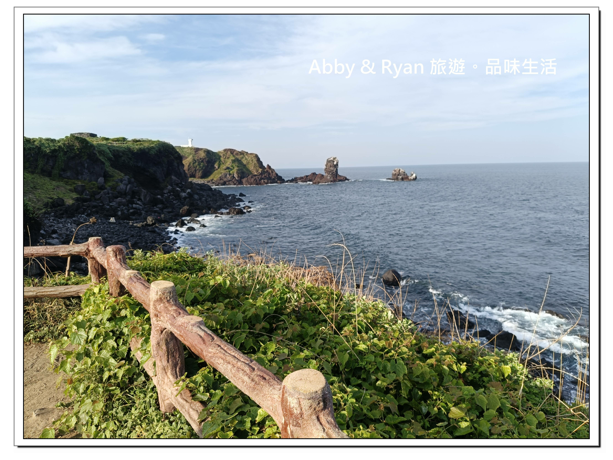
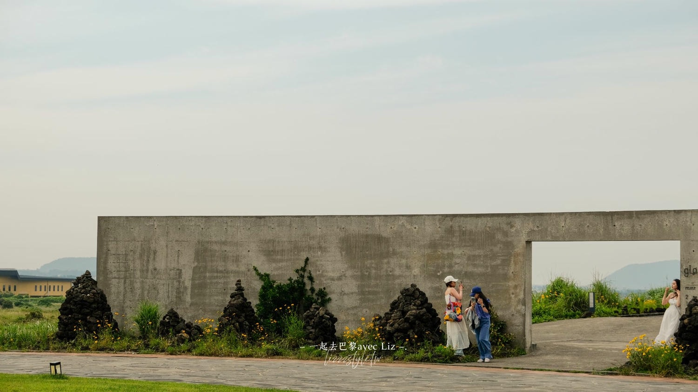
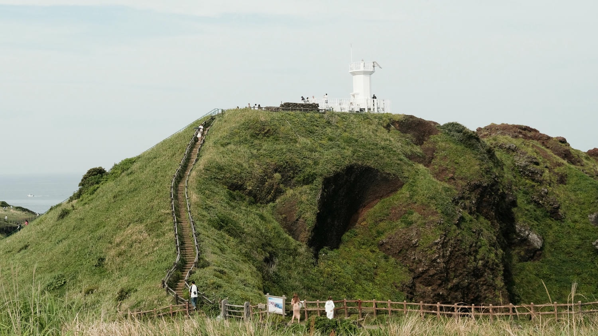
- 沿岸海風極為強勁且沿途遮蔽物較少，建議穿著舒適好走的平底鞋，並做好防風防曬準備。
- 步道走到底可順道參觀安藤忠雄設計的「Glass House（玻璃屋餐廳/薄荷咖啡館）」與「Yumin 藝術館」。
- 地理位置鄰近城山日出峰（車程約 10–15 分鐘），非常適合排在同一天的東部環島遊行程中順遊。
被列為 UNESCO 世界自然遺產的濟州島標誌性地標！由十萬年前海底火山噴發形成，山頂保留直徑達 600 公尺、狀似巨大綠色王冠的盆狀火山口，周圍環繞 99 座奇岩峰頂。沿著步道登上峰頂，不僅能將壯闊火山口與無邊際太平洋盡收眼底，更以自古名列瀛洲第一景的磅礡日出景觀震撼人心。
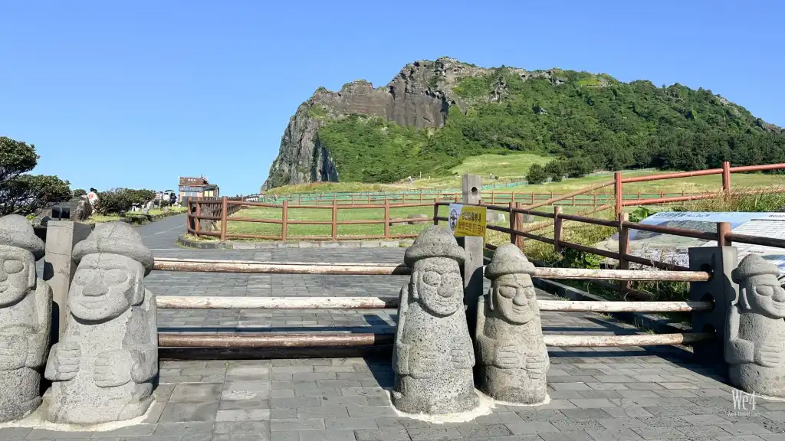
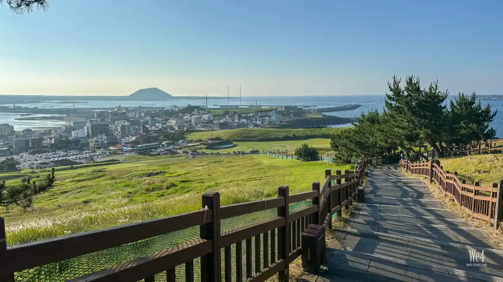
- 路線分為「收費頂峰登山步道（成人約 ₩5,000）」與「免費海邊觀景步道」，欲俯瞰火山口必須購買門票登頂。
- 登頂單程約需 20–30 分鐘木棧階梯路程，坡度略陡，建議穿著防滑好走的運動鞋並攜帶飲用水。
- 山腳下海邊特定時段（通常約 13:30 / 15:00）有濟州海女捕撈表演可免費觀賞。
- 鄰近涉地可支（車程約 10–15 分鐘）與牛島渡輪碼頭（車程約 5 分鐘），適合串聯成濟州東部一日遊。
濟州島東北部最具代表性的夢幻果凍海灘！「月汀」寓意月亮停留之地，擁有細緻潔白的沙灘與清澈透亮、層次分明的翠綠湛藍海水。沙灘上擺放著一整排面向大海的彩色小木椅，背景襯托著遠方旋轉的巨型白色風車，畫面唯美浪漫。海岸線旁林立著眾多露天景觀咖啡館，隨手挑一間坐下便能盡情享受治癒的濟州海風。
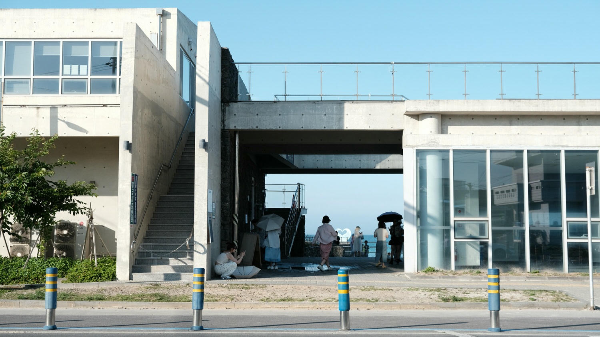
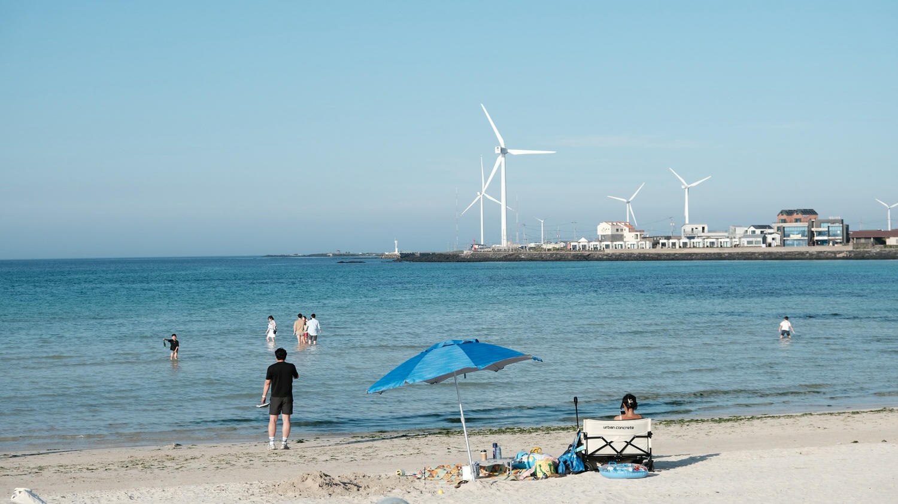
座落於挾才海水浴場旁的三層樓海景咖啡廳！店名意為「暫停、給心靈一個逗號」。坐在大片景觀窗邊即可飽覽層次豐富的翡翠色果凍海與遠方的飛揚島，是欣賞濟州西海岸壯麗海景的絕佳放空點。
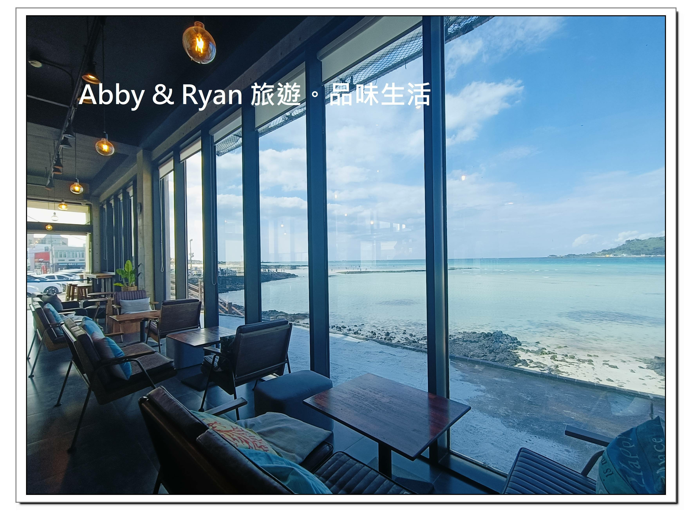
- 🌅 景觀優勢：海景視野極佳，被許多旅客譽為濟州島最美海景視角之一。
- 🍴 餐點評價：主要賣點為無敵海景與拍照氛圍，餐點與咖啡風味整體評價較為普通。
結合水泥灰調工業風與溫潤木質造景的潮流美學咖啡館！店名意為「隱密的休息池塘」，提供沉靜且富有設計感的放鬆空間。店內主打香醇順口的特調奶油拿鐵與每日限量的手工法式甜點，隨處角落都極具光影氛圍。
- ☕ MOT 特調奶油拿鐵（Signature Cream Latte）：綿密濃郁奶泡搭配深烘焙義式濃縮，甜度適中且滑順順口。
- 🍰 手工法式甜點 & 濟州柑橘塔：每日限量供應的精緻手作點心，擺盤如藝術品般吸睛。
- 📸 拍照取景：角落的水泥光影牆與極簡桌位是 IG 上的熱門打卡點。
- 📅 營業確認：質感小店公休日偶有微調，建議造訪前先透過官方 Instagram 確認最新營業動態。
以重力加速度（9.81m/s²）為主題的高科技無引擎賽車主題樂園！坐上賽車沿著坡道極速奔馳狂飆，回程切換為自動駕駛模式悠閒遠眺海景。賽後還能透過官方專屬 APP 免費下載高清個人競速追焦影片，刺激感與科技感滿分。
- 🏎️ GR (Gravity Racing) 重力賽車：完全依靠坡度重力衝刺，時速最高可達 60km/h，賽後可於 APP 下載個人第一人稱競速影片。
- 🎮 LAB 981 室內科技體育館：集結實境射擊、棒球打擊、足球、騎馬與 VR 等十多種互動體感遊戲。
- 🍕 BROC'3 餐飲區 & 戶外 High Swing：設有美食街與周邊專賣店，戶外還有 360 度旋轉碰碰車與高空鞦韆等極限挑戰設施。
- 👟 穿著要求：駕駛賽車必須穿著全包覆包鞋/運動鞋（嚴禁穿著拖鞋、涼鞋與高跟鞋入場）。
- 📱 官方 APP：出發前建議先在台灣下載好「9.81 Park」官方 APP 並註冊會員，入場綁定手環後方可記錄即時圈速與下載高清影片。
- 🎟️ 購票攻略：建議事先於 Klook 或 KKday 預訂「賽車＋室內體驗組合票」，現場掃 QR Code 換手環免排隊且比現場購票划算。
韓國最大規模的沉浸式數位媒體藝術館！由 1,400 坪舊音響工廠改建，以「永恆的自然（ETERNAL NATURE）」為主題，結合極致光影、立體聲效與專屬香氛，打造震撼感官的沉浸式美學體驗。

- 🌊 WAVE 巨浪 & 🌸 FLOWER 花海：震撼力極強的裸眼 3D 巨浪撲面而來，以及運用鏡面無限延伸的夢幻花海世界。
- 🌅 BEACH 擬真海灘 & 🦒 夜光野生動物：踩在逼真的極光海浪投影上，還能親手彩繪動物並掃描投射至巨幅動態森林畫布。
- 🍵 ARTE TEA BAR 媒體光影茶館：極力推薦體驗！茶杯放至桌面時會綻放出唯美光影花朵，移動杯身花瓣也會隨之飄移。
濟州島規模最大的旗艦級綜合度假園區！結合知名人氣動畫「爆笑蟲子 LARVA」主題公園、四季溫水與刺激滑道的大型水上樂園，以及齊全的美食商場與免稅購物街，適合安排充實的一日玩樂行程。
- 🎢 神話主題公園（Theme Park）：以 LARVA 爆笑蟲子為核心 IP，打造歡樂世界與奧斯卡新世界等園區，必玩 360 度旋轉過山車。
- 🏊 神話水上樂園（Water Park）：濟州最大水上主題樂園，設有超大巨浪池、漂流河與多條高空急速滑水道。
- 🛍️ 神話商業街 & 美食廣場：匯聚大型地下美食街、YG Republic 韓式燒肉，以及新世界免稅店與各式潮流選品店。
超人氣的炭火黑豬肉專賣店！主打厚切原塊炭烤與全程貼心的桌邊代烤服務。外酥內嫩的厚切黑豬肉沾上滾燙濃郁的特調魚醬與加熱辣醬，一口咬下滿溢濃郁炭香與鮮甜肉汁。
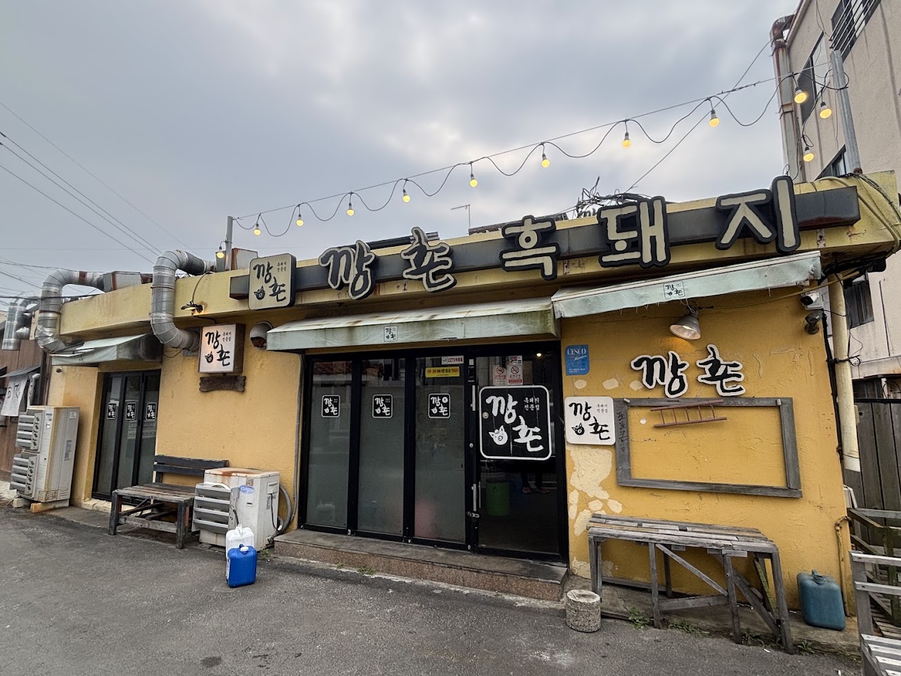
- 🥩 黑豬肉近肉（흑돼지 근고기）：必點招牌！一次享受厚切五花肉與鮮嫩梅花肉的雙重飽滿多汁口感。
- 🍲 黑豬肉泡菜鍋（김치찌개）：湯頭酸香濃郁且帶有黑豬肉油脂香，解膩又非常下飯。
可以一邊看可愛小矮馬、一邊享用炭烤黑豬肉的特色秘境景觀餐廳！寬敞的戶外庭園放養著溫馴的濟州馬，夕陽西下時霞光灑落氛圍極佳。主打厚切多汁的濟州黑豬肉，搭配新鮮包肉生菜與特調沾醬，是拍照與聚餐的絕佳選擇。
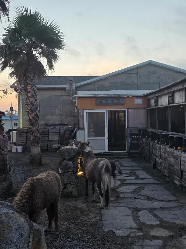
- 🌅 最佳造訪時間：推薦預約 傍晚 17:00–18:00 首波入場，能同時拍到可愛小矮馬與落日粉紫霞光。
- 🐴 戶外座位體驗：戶外露天座位氣氛絕佳但易受天候影響（雨天或低溫僅開放室內），建議挑選晴朗好天氣前往。
專賣濟州黑豬肉 6 種稀有特殊部位（豬頰肉、花肉、眼周肉等）的超人氣烤肉名店！肉品精緻擺盤成浪漫玫瑰花造型，肉質鮮嫩彈牙、肉汁滿溢。店內還會大方免費招待手作漢堡肉、烤豬皮與熱湯，CP 值極高。
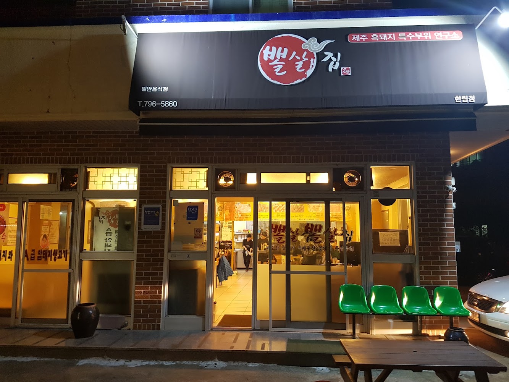
- 🌸 特殊部位綜合拼盤（모듬구이）：初訪必點！依人數選擇大/小份，一次吃遍豬頰肉、花肉等 6 種特色稀有部位。
主廚遠赴日本百年鰻魚老店研習手藝的超人氣名店！提供正統關東蒸烤與關西炭火兩種風味的極致鰻魚飯，炭香四溢、醬汁鹹甜適中，搭配精緻日式木質庭園空間，用餐儀式感十足。
- 🍱 東京風鰻魚重（우나쥬 / Unaju）：關東經典做法，鰻魚先蒸後烤，口感極致軟嫩綿密，入口即化。
- 🍚 名古屋鰻魚三吃（히츠마부시 / Hitsumabushi）：關西直接炭火炙烤，外皮微焦酥脆，可分次享受原味、拌入佐料與加入高湯的茶泡飯三重風味。
- 🍶 套餐附餐：隨餐皆附精緻茶碗蒸、日式漬物與小菜，高質感重箱盛裝極具美感。
涯月海岸公路上的傳奇排隊名店！以一邊眺望蔚藍海景一邊享用熱騰騰的滿料海鮮拉麵聞名。浮誇鋪滿新鮮章魚、活鮑魚與整隻螃蟹，鮮甜濃郁的海洋精華湯頭令人一試難忘。
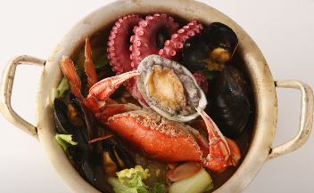
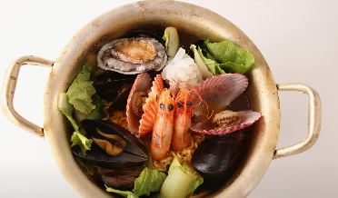
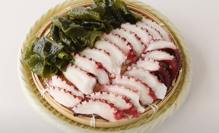
- 🦑 整隻章魚海鮮拉麵（문어라면）：每日限量供應！鋪上整隻鮮嫩水煮章魚，搭配螃蟹與鮑魚，湯頭極度鮮甜濃郁。
- 🍲 經典海鮮拉麵（해물라면）：CP 值極高的必點款，含整隻螃蟹與鮮甜鮑魚，辣度可自由選擇純味（不辣）、中辣或大辣。
- 🐙 新鮮水煮章魚（문어숙회）：肉質肥厚彈牙且鮮嫩多汁，沾上韓式辣醋醬風味絕佳。
滿滿粉紅泡泡的三層樓三麗鷗主題博物館！整棟建築以 Hello Kitty 的粉紅世界為核心打造，包含夢幻客廳、臥室、音樂互動區、3D 劇院以及頂樓空中花園，充斥各式超萌造景與濟州限定周邊商品。
- 🏰 1F 故事城堡與夢幻小屋：巨型粉紅城堡塔、Hello Kitty 家族歷史介紹與全粉紅客廳臥室。
- ☕ 2F Kitty 主題咖啡廳 & 互動館：提供 Hello Kitty 造型拉花拿鐵與限定甜點，同層設有美樂蒂、酷洛米等好友展示區。
- 🎬 3F 3D 影院與空中花園：可免費觀賞 3D 迷你動畫短片，頂樓戶外綠地還設有大型造型迷宮。
充滿吉卜力動畫既視感的森林系童話風咖啡館！以可愛的小橡實與療癒木質造景聞名，店內主打濃郁滑順的手作希臘優格碗、精緻橡實造型手作甜點與特調飲品，隨處都如同置身童話繪本般好拍。

- 🥣 手作希臘優格碗（Greek Yogurt Bowl）：口感綿密厚實如乳酪，搭配當季新鮮水果與蜂巢蜜，層次豐富清爽無負擔。
- 🌰 橡實造型瑪德蓮 / 甜點：超萌的立體橡實造型點心，外酥內鬆軟，拍照打卡人氣第一。
濟州島極具代表性的超大型絕美旗艦咖啡廳！空間融合農村自然意象與現代玻璃溫室建築，挑高天井引進大片自然光，搭配室內中央水池與大片綠植造景，視覺感極為震撼。現場供應多款結合濟州在地特產的手作麵包與澎湃早午餐。

- 🥜 牛島花生造型麵包 / 綠茶烘焙：外型可愛吸睛，香氣濃郁扎實。
- 🍳 特色早午餐拼盤（Brunch Plate）：份量豐富澎湃，使用在地新鮮蔬果與食材製作。
以濟州黑色玄武岩與流水為靈感的沉浸式美學空間！傍晚水池中央會上演震撼的「水上點火秀」，熊熊烈火在黑色岩石與水面上燃燒，如同暗夜中流動的熔岩火海，氛圍感極為魔幻。
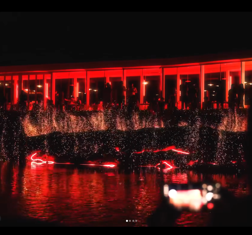
- 🔥 夜間魔幻水上點火秀：水面與玄武岩燃起熱烈火芒，搭配專屬音樂與燈光，視覺效果極度震撼。
- 🍹 熔岩火山特調 & 輕食：供應特色氣泡調飲、特調咖啡，以及現烤手工披薩與輕食沙拉盤。
- ⏰ 最佳造訪時段：建議於 17:30 – 18:00 抵達，能同時拍到日落暮色與入夜後的熔岩火海。
- 📸 取景與安全：點火期間池畔溫度較高，站在環狀戶外座位區拍攝全景視角最佳。
- 🌧️ 天候注意：戶外點火秀若遇大雨或強風可能會暫停，出發前建議先至官方 Instagram 確認當日動態。
店名意為「落日之處」的涯月海岸代表性咖啡聚落！由傳統韓屋「本館 (해지개)」與新館「宮殿館 (해지개더궁)」組成，坐擁涯月落日海景第一排。大片落地窗配上傳統木質結構，點一杯特調即可飽覽金黃晚霞與漸層果凍海。
- 🏯 雙館特色：本館主打戶外茅草涼亭海景，宮殿館則具備古典宮廷美學，兩館相連且點餐後皆可自由穿梭入座。
- 🥐 特色烘焙：石頭爺爺造型麵包、濟州柑橘塔，每日新鮮現烤且造型精緻。
- 🍹 招牌飲品：濟州黑芝麻拿鐵、清爽解膩的柑橘氣泡特調。
- 🌅 最佳時段：建議在日落前 1 小時抵達，先參觀兩館挑選喜歡的座位，並卡位戶外看夕陽。
- 🚶 周邊順遊：緊鄰漢潭海岸散步路，喝完咖啡可直接銜接海濱木棧道散步拍照。
濟州島最具代表性的療癒森林步道！漫步在筆直高聳的杉木與扁柏林間，空氣中瀰漫著清新芬多精與泥土芳香。平緩好走的木棧道適合漫步放鬆，早晨薄霧繚繞時更宛如走進童話仙境，是遠離塵囂的拍照放鬆首選。
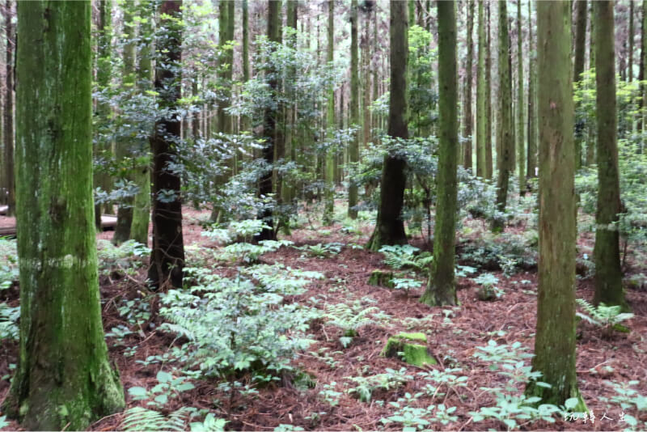
- 🚾 洗手間位置：僅入口處設有廁所，步道內部無洗手間，入園前請先使用。
- 👜 隨身準備：建議自備飲用水與輕便小點心，夏季造訪請備妥防蚊液。
- 📱 通訊狀況：森林深處部分路段手機訊號較不穩定。
超夢幻的粉紅主題空間！館內設有專屬 Lounge 與周邊商品專區，滿滿的 Kitty 元素與精緻甜點飲品，是三麗鷗粉絲絕對不能錯過的療癒拍照打卡熱點。
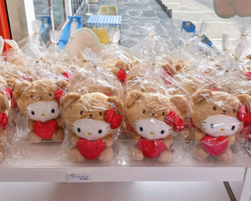
濟州島規模最大且歷史最悠久的傳統市場！白天販售新鮮海產、生鮮水果及濟州特產伴手禮，傍晚 8 號門搖身一變成為熱鬧的夜市美食街。黑豬肉料理、現炸小吃與各式柑橘甜品應有盡有，是體驗濟州夜生活與在地美食文化的必訪勝地。


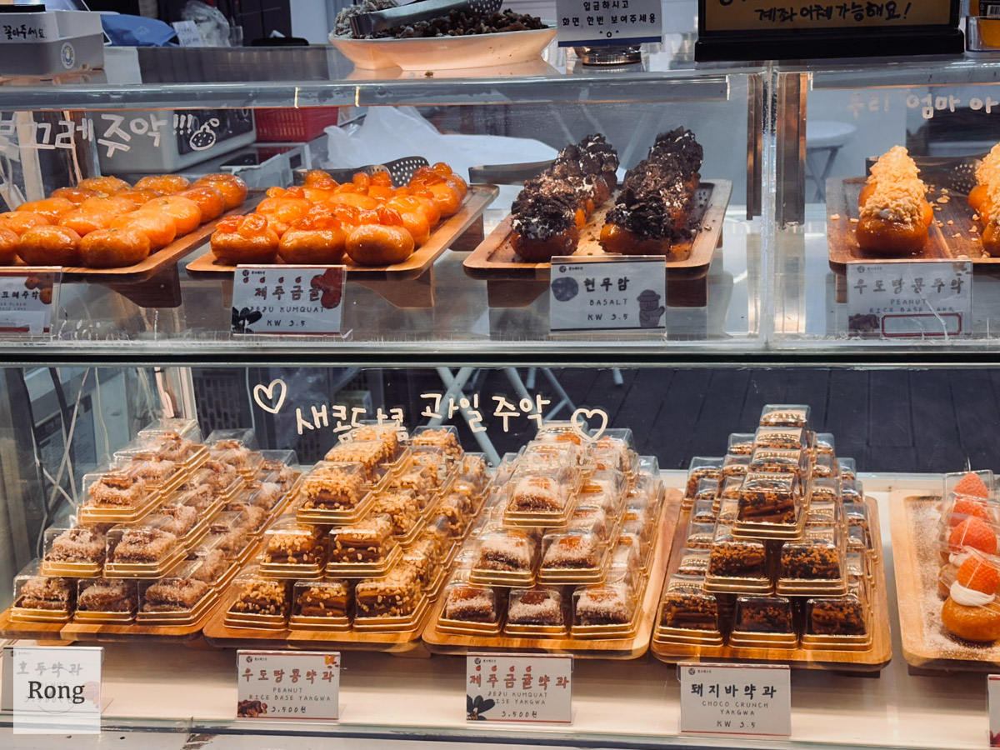

- 🍊 現榨橘子汁（8號門）：整顆濟州柑橘現榨不加水，酸甜解膩。
- 🍢 橘子糖葫蘆（8號門）：整顆多汁橘子裹上薄脆糖衣，口感豐富。
- 🥐 SOLBRE 鹽麵包冰淇淋（3號門旁）：外脆內鬆的鹽可頌搭配濃郁霜淇淋。
- 🥩 黑豬肉五花肉卷：可選辣味或燒烤原味，現場炙燒香氣十足。
- 🫓 糯米甜油糕：糯米粉與馬格利酒發酵後油炸製成的在地傳統糕點。
- 🍮 UMU 布丁（3號門步行約 2–3 分鐘）：採集海女天然海藻製成，口感滑順，推薦原味、柑橘與花生巧克力。
濟州島中央地下街超人氣的伴手禮專賣店！店內匯集了各類以濟州柑橘、綠茶與石頭爺爺為主題的精緻點心與飲品，品項齊全且包裝吸睛，是挑選送禮與紀念品的好去處。


- 🍊 橘子爺爺果汁：以濟州文化象徵「石頭爺爺」為造型瓶身，最具代表性的必買伴手禮。
- 🍫 FRUNACK 柑橘巧克力：烘乾新鮮柑橘片淋上濃郁歐式巧克力，酸甜層次分明。
- 🍯 柑橘油蜜果：以橙汁、蜂蜜與麵粉精心油炸後裹上香脆米香，口感酥脆不黏牙。
- 🍵 O’sulloc 抹茶醬：精選濟州在地頂級綠茶與新鮮牛奶調配，抹吐司或配餅乾濃郁順口。
濟州島最著名的豬肉湯麵代表名店之一！選用特製的彈牙黃色麵條，搭配長時間熬煮、濃郁醇厚卻不死鹹的乳白色豚骨高湯，上方鋪滿厚切鮮嫩的濟州黑豬肉片，每逢用餐時段總是大排長龍。

- 🐷 豬肉湯麵（고기국수）：黃色手工麵條吸附濃郁乳白豚骨湯頭，鹹度適中且肉質軟嫩多汁。
濟州島無人不知的傳奇排隊名店！主打濟州傳統獨有的「蕨菜解酒湯（고사리육개장）」，將熬煮至絲狀的蕨菜與豬肉絲融入濃稠香醇的湯頭中，口感獨特滑順且暖胃濃郁，從清晨 6 點開始就吸引滿滿人潮前來候位。


濟州島超高評價的特色海鮮專門店！主打新鮮現切的無腥味「鯖魚生魚片」搭配鮮甜生紅蝦，以及貼心去刺的「純肉辣燉白帶魚」，濃郁醬汁拌飯堪稱一絕，是許多海鮮老饕指定的必訪餐廳。

濟州島超人氣的頂級安東牛肋排專門店！選用優質韓牛部位，以特製蒜香醬汁醃漬後炭火現烤，肉質鮮嫩多汁且蒜香濃郁。搭配新鮮滑嫩的生牛肉更是老饕必點的雙重美味享受。
- 🧄 蒜香牛肋排（마늘갈비）：鋪滿現剁蒜泥的鮮嫩牛肋條，炭烤後蒜香撲鼻、肉汁飽滿。
- 🥩 韓牛生牛肉（한우육회）：肉質鮮甜無腥味，拌入麻油與蛋黃口感滑順濃郁。
被譽為濟州島黑豬肉界頂級天花板的超人氣名店！採用獨門低溫熟成技術，將黑豬肉的肉質軟嫩度與肉汁鮮甜度提升至極致。店內提供專人桌邊代烤服務，搭配特製明太子、山葵與芥菜等沾料，層次豐富令人驚豔。


- 🥓 熟成五花肉（숙성 삼겹살）：肥瘦比例完美，經熟成處理後外酥內多汁且完全不油膩。
- 🍖 熟成骨里脊肉（뼈등심）：每日限量供應的厚切帶骨肉排，肉質扎實鮮嫩，香氣十足。
濟州島傳奇的三大豬肉湯麵名店之一！全店菜單極致純粹，僅專賣「豬肉湯麵」單一品項。以長時間熬製的大骨高湯為底，湯頭醇厚香濃而不膩口，搭配大塊軟嫩的黑豬肉與彈牙麵條，是在地人與遊客都爭相造訪的排隊老店。

- 🐷 豬肉湯麵（고기국수）：全店唯一主打，大塊豬肉厚實軟嫩，湯頭濃郁香醇。
結合濟州海女文化與頂級燒肉的特色名店！主打厚切鮮嫩的濟州黑豬肉，搭配新鮮現撈的活鮑魚、鮮甜海膽以及滿料海鮮拉麵，在同一張烤網上同時享受頂級肉香與大海的鮮美滋味。
- 🥓 濟州黑豬肉：厚切扎實、肉質彈牙，炭烤後香氣四溢且多汁不油膩。
- 🦪 黑豬肉＋活鮑魚拼盤：新鮮活鮑魚直接上烤網炭烤，口感脆嫩鮮甜。
- 🌊 海膽套餐：金黃濃郁的新鮮海膽，入口即化、甘甜無腥味。
- 🍜 海鮮拉麵：加入多種海鮮熬煮的香辣湯頭，解膩又暖胃的完美收尾。
視覺與味覺雙重震撼的海岸海鮮專門店！將大海的鮮美精華匯聚於一整盤，包含新鮮現剝的濟州生紅蝦、油亮滑嫩的鯖魚生魚片、鮑魚與海膽等多種當季海味，份量澎湃且鮮甜度破表。
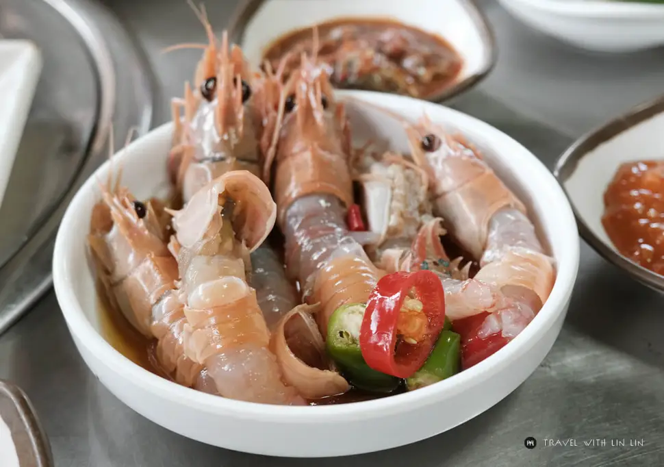
- 🌊 海鮮大拼盤（해산물 모듬）：一次吃齊多種濟州當令現撈海味，拍照打卡超吸睛。
- 🦐 濟州道蝦（딱새우 / 甜蝦）：肉質緊實晶瑩、入口即化且甘甜多汁。
- 🐟 鯖魚生魚片（고등어회）：新鮮現切毫無腥味，搭配專屬醬汁與紫菜更添風味。
在地超人氣的活鮑魚海鮮鍋老店！整鍋鋪滿活跳跳的新鮮鮑魚、螃蟹、大蝦與各式貝類，滾煮後湯頭清甜鮮美、滿滿大海精華。再配上一碗香濃滑順的綠色鮑魚內臟粥，暖胃又滿足。
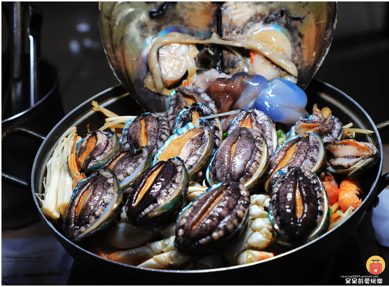
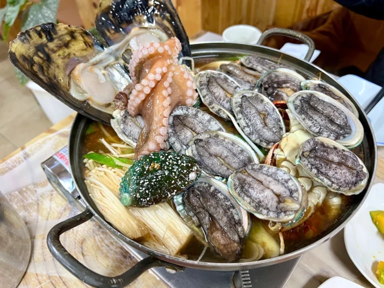
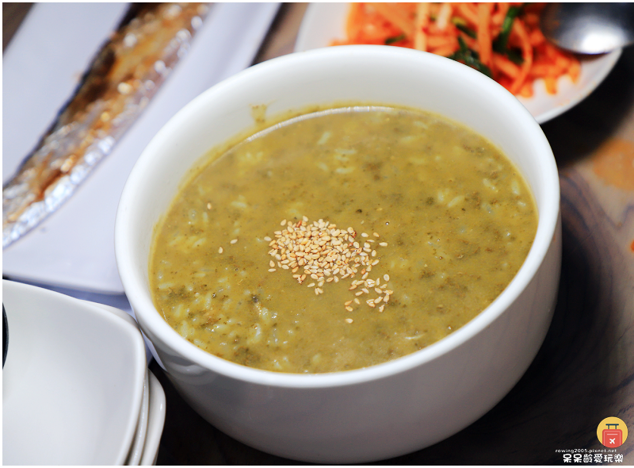
- 🦪 活鮑魚海鮮鍋（활전복해물탕）：滿滿活鮑魚與澎湃海鮮現煮，湯頭甘醇鮮甜無比。
- 🥣 鮑魚粥（전복죽）：以鮑魚內臟慢火熬煮出天然濃郁的翠綠色澤，香氣濃醇順口。
前身為老舊洗衣店改建而成的質感風格咖啡館！店內散發著悠閒靜謐的氛圍，主打特調的招牌「洗衣店拿鐵」與外酥內軟的濃郁「花生達克瓦茲」，是度過午後咖啡時光的極佳去處。
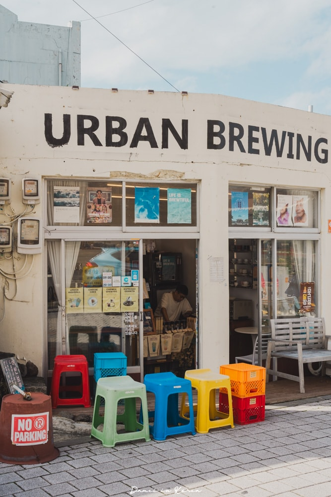
- 🥛 洗衣店拿鐵（세탁소라떼）：奶香與濃縮咖啡比例和諧，順口不甜膩。
- 🥜 花生達克瓦茲（땅콩 다쿠아즈）：外層微脆鬆軟，夾心花生香氣濃郁扎實。
由韓國國家級冠軍咖啡師所創立的代表性名店！座落在寧靜的綠意庭園之中，最富盛名的招牌便是將濟州柑橘的果香酸甜與綿密奶泡完美融合的「橘子卡布奇諾」，風味層次極為豐富。

- 🍊 橘子卡布奇諾（텐저린 카푸치노 / Tangerine Cappuccino）：上層放上糖漬柑橘切片，柑橘清香與濃郁咖啡完美結合，是每桌必點的代表作。
濟州島極具話題性的鹽可頌專賣店！主打外酥內軟的特製鹽麵包，並結合多種創意甜鹹餡料。每天僅有兩個出爐時段，因人氣極高，通常需提前透過專屬 APP 預訂才能順利享用。
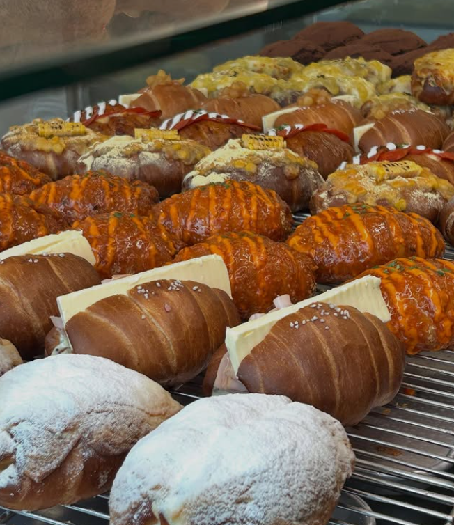
- 🍞 每日限量出爐：每日固定兩個出爐時段，建議務必提前使用 APP 預訂以免撲空。
- 🥐 創意豐富內餡：以現烤酥脆鹽麵包為基底，搭配多種特調甜鹹抹醬與豐富配料。
濟州島超療癒的手作甜點名店！以印有可愛笑臉圖案的厚餡達克瓦茲聞名，外皮蓬鬆微酥、內餡濃郁扎實，無論是現場品嚐或挑選 6 入禮盒作為伴手禮都非常受歡迎。
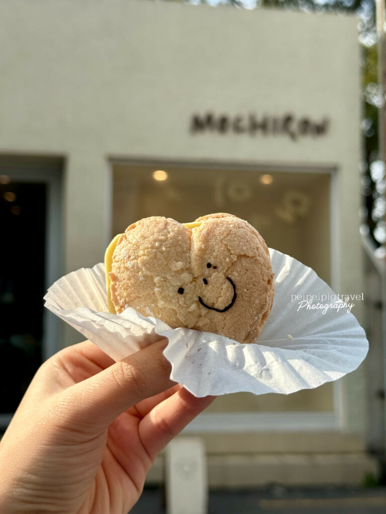
- 🍫 人氣口味：奶油紅豆、濃郁抹茶、可可巧克力、香醇花生。
- 📦 盒裝規定：需購買滿 6 顆 才會提供專屬精美紙盒包裝。
濟州島在地的精緻手作烘焙小店！以每日新鮮出爐的特色麵包與點心吸引眾多甜點控造訪，外酥內軟的豐富口感與質感包裝，無論作為隨手午茶或伴手禮都非常適合。